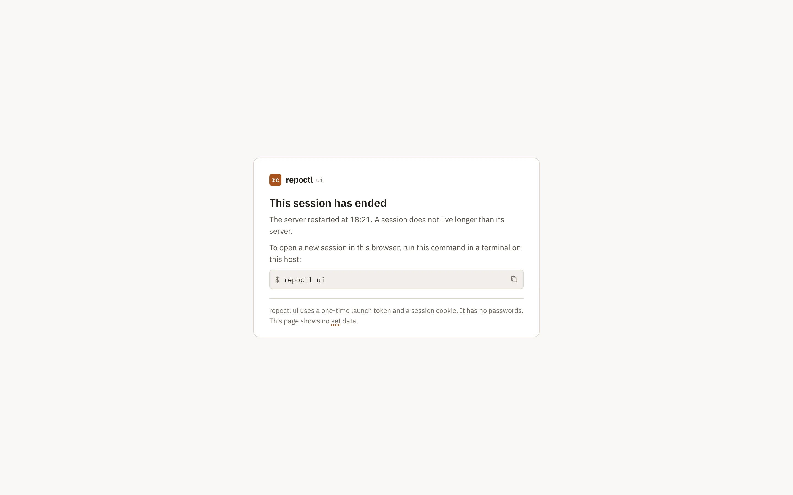
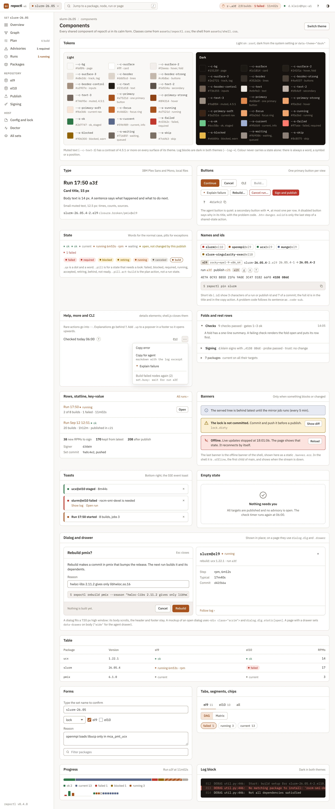

This chapter specifies the frame of repoctl ui. It gives the principles, the calm rules for every page, the URL scheme, the app shell, live updates, sessions, the shared components and the theme. The pages are in ui-build.html and ui-publish.html. The agent buttons and the agent panel are in agents.html.
--listen takes a loopback address only. pinentry shows on the local desktop (cli.html#cmd-ui).shell.js (theme, copy, keys, live state). The graph page adds graph.js (ui-build.html#graph)./dev/null. Its stdout and stderr go to files, never to pipes: runs/<run>.out and runs/<run>.err next to the journal for a child with a run, else $XDG_RUNTIME_DIR/repoctl/ui/<child>.out and .err. Thus Ctrl-C on the server terminal, repoctl ui --stop and a crash of the server never reach a child. A build continues, and a publish between push and tag completes (publish.html#complete). Only Cancel or repoctl cancel stops a run..out and .err files of each child without a run that ended.--yes to a child. It gives the child a one-use UI confirmation with the typed values and the plan digest (cli.html#ui-confirmation).A page shows the exceptions and the next step. Normal states are quiet, and a fold holds the text that a human reads once. The rules apply to every page and, where they fit, to the terminal output. The examples use run r-20261102-1750-a3f at 18:01 and the publish review of el9.
| Rule | What to do | Example |
|---|---|---|
| R1 One shell | Use the same frame on every page: the same top bar, sidebar and badges. The run chip has one format and is the only place that says "a run is active". A page body repeats the run state only when the page is that run. | The chip reads r-…a3f 2/8 builds · 1 failed · 11m02s on every page. |
| R2 Exceptions first | Fold rows in the default state (current, ok, clean, same, up to date) into one row with a count. Show the rows that differ. | The Overview matrix shows ucx, slurm, openmpi and slurm-singularity-exec, then "▸ 7 packages current on all their targets". |
| R3 Pills mean "look here" | Use a pill only for failed, blocked, required, running, accepted, retiring, revoked, behind and not ready. Show a normal state as quiet text, or leave the cell empty. Do not show zero counts. | "current" is quiet text. "canceled 0" shows nothing. |
| R4 Say it once | Show each fact once, where the human acts on it. Do not repeat a card in a banner. | closure.broken/pmix@el9 shows once on the Overview, as Needs you item 2. |
| R5 One primary | Use one filled button per page, for the real next step. A row has one visible button; the other actions go in a "⋯" menu. A long page keeps its primary button in a sticky footer. On a required advisory row, "Rebuild…" is the primary of its row only. | Run detail: "Review el9 publish ›" is the filled button, off until the el9 nodes end. "Retry failed" is in ⋯, off, with its reason. |
| R6 Quiet agent button | The ✦ agent button is a quiet secondary button. Show one per row at most. Do not show it where the plain text already gives the answer. | The Overview has one outline "Explain failure". "Is a rebuild necessary?" is in the ⋯ menu of the advisory item. |
| R7 Explain once | Put text that a human reads once behind a "?" or a fold with a one-line summary. | "What happens: 8 steps · latest does not change before step 7 ▸" |
| R8 Words before codes | Start with a plain sentence. Problem codes, rule ids and exit codes come after it, small and muted, or in a fold. | "slurm@el10 failed: rocm-smi-devel is not available for el10", then dep.not-for-target in small muted text. |
| R9 Short ids | Use a short id or a time as link text. Put the full id in the tooltip and the copy action. | r-20261102-1750-a3f shows as "today 17:50 · a3f". |
| R10 One CLI toggle | One "CLI" toggle in the page head holds the CLI commands of the page. No CLI chip on each card. A dialog shows its CLI command in the CLI toggle of the page that opens it. The publish confirm dialog has no CLI line; the review page shows repoctl publish. | The Overview toggle holds repoctl status, repoctl advisories and repoctl runs. |
| R11 Red for this task only | Use red only for a blocker of the task on this page. Show facts outside the task in neutral colours. | Publish review of el9: "el10 is not in this publish: slurm@el10 failed. Why ▸" is neutral. closure.broken/pmix@el9 is open, but this publish does not change its closure, so it is not red. |
| R12 Sans for words | Use the sans font for words and numbers. Use mono only for identifiers, commands, NVRs and logs. | Table labels are sans. ucx-1.22.1-1.el9 is mono. |
| R13 All-pass lists fold | A list where all items pass folds to one line. A failing item opens the fold and shows first. | "9 checks passed · gates 1–3 ok ▸" |
In the terminal the same rules mean: print the exceptions and a totals line, and print all rows with -v. A hint: line follows from a finding in this output; static help goes to repoctl help TOPIC. A column with the same value on every row moves into the header line. Colour marks only the states that need action. Details: terminal.html#calm and cli.html#output.
Calm must not hide a risk. These items always stay visible:
upstream.release stays as a count on the Plan page and the Overview, so a human sees that a new Slurm release exists.| Page | URL | CLI equivalent | Mockup |
|---|---|---|---|
| Sets (landing) | / | repoctl status in each set | sets |
| Doctor (host) | /doctor | repoctl doctor | - |
| Overview | /s/<set>/ | repoctl status | overview, no agent |
| Graph | /s/<set>/graph?target=el9[&view=dag|matrix][&node=<dir>]; target=all gives the union | repoctl graph --target el9 | graph, failed, matrix, all, node |
| Plan | /s/<set>/plan[?target=el9][&dir=ucx]; no target means all targets | repoctl plan | plan, staged, rebuild dialog |
| Advisories | /s/<set>/advisories[?dismissed=1], one row #adv-<id> | repoctl advisories ls | advisories |
| Upstream | /s/<set>/upstream[?refresh=1] | repoctl upstream | - |
| Runs | /s/<set>/runs[?state=failed&kind=build|publish|check] | repoctl runs | runs |
| Run detail | /s/<set>/runs/<run>, also for a publish run p-… | repoctl runs RUN | run detail, success |
| Node log | /s/<set>/runs/<run>/nodes/<dir>@<target>; raw file …/logs/<step>/<file> | repoctl logs RUN NODE | failed, live |
| Packages | /s/<set>/packages | repoctl list | packages |
| Package | /s/<set>/packages/<dir>[?target=el9&tab=history|spec|upstream] | repoctl show DIR | slurm, ucx |
| Repository | /s/<set>/repo/<target>[?repo=slurm-debuginfo][&q=] | repoctl repo ls --target el9 | repository |
| Staging | /s/<set>/repo/<target>?run=<run>; diff …/repo/<target>/diff?run=<run> | repoctl repo ls --run RUN, repoctl repo diff --run RUN | staging |
| Publish | /s/<set>/publish?target=el9 (review); confirm is a dialog; progress and result on /s/<set>/runs/<publish id> | repoctl publish --target el9 --dry-run, then repoctl publish --target el9 | review, accept, confirm, progress, failed, done, blocked |
| Signing | /s/<set>/signing | repoctl sign ls, repoctl sign onboard | signing |
| Config and lock | /s/<set>/config; #lock shows the lock diff | repoctl config show | - |
| Session ended | /-/session?next=<path> | repoctl ui | session |
The pages without a mockup show the output of their CLI command as a table. There is no snapshot page. The Overview and the publish result show the snapshot ref with a copy button. List and restore stay in the CLI (repoctl repo snapshots, repoctl repo restore), because restore changes shared state. The agent panel is a drawer on any set page: ?agent=<id> opens it (agents.html#agent-panel).
URL rules:
<set> is the name in repoctl.yaml. It must match ^[a-z0-9][a-z0-9._-]*$. The name - is not possible, so /-/… and /s/<set>/-/… are free for server endpoints.<dir>@<target> in paths, in SSE event names, in the jump box and in the page text, for example slurm@el10.adv- plus the advisory id with / and @ changed to -, for example adv-closure.broken-pmix-el9. The full id is in data-advisory-id.?target=. The repository takes the target in the path, because a target is one repository tree. Without a target, a page uses the first target of the set (el9).hx-boost with hx-push-url. Back and reload give the same page.| Endpoint | Method | Use |
|---|---|---|
/-/auth?t=TOKEN&next=<path> | GET | Trade a launch token for the session cookie, then 303 to next (authentication). |
/-/ping | GET | 204 with a valid session, else 401. shell.js calls it after an SSE error. |
/-/static/<hash>/… | GET | Embedded assets with a content hash: htmx, the SSE extension, shell.js, CSS, fonts. Cached forever. |
/-/events?page=sets | GET (SSE) | Stream for the pages outside a set (Sets, Doctor). |
/s/<set>/-/events?page=<page>[&run=][&node=][&target=][&agent=] | GET (SSE) | Stream for a set page (live updates). |
/s/<set>/-/frag/<region> | GET | One region as HTML, the same HTML as its SSE event. |
/s/<set>/-/dialog/<name> | GET | A dialog into #modal: build, cancel, checkout, pin, rebuild, dismiss, publish, sign-deployed. The CLI toggle of the page that opens it holds its command. |
/s/<set>/-/actions/<verb> | POST | Verbs: build, cancel, check, checkout, pin, rebuild, publish, advisory-dismiss, advisory-undismiss, advisory-accept, sign-deployed. The CSRF header is required. The answer is HX-Location or a fragment, with an HX-Trigger toast. A verb that takes the set lock does not wait: when another command holds the lock, the answer is 409 with the text of set.busy (states). advisory-accept holds the accept state in the publish form and writes nothing to the set. |
/s/<set>/-/agent/<task>, …/-/agent/<id>/stop | POST | Start or stop an agent (agents.html#agent-buttons). |
/-/frag/set-menu, /-/go?set=<set>&from=<path> | GET | Contents of the set switcher. Switch the set and keep the page kind. |
/-/sets/<set>/remove | POST | Remove a set from the list. The files stay. CLI: repoctl ui --remove SET. The CSRF header is required. |
A shared-state verb (publish, sign-deployed) needs the typed confirmation of its dialog. A failed push has no button. Its recovery is a CLI command, because it changes shared state (ui-publish.html#failed).
Top bar, left to right (sticky, 52 px):
/.<details> menu that works without JavaScript. Each set shows its path and its state; only a "look here" state is a pill. "All sets" and the line "Add a set: run repoctl ui in its directory." are at the end. A pick goes through /-/go: /s/A/runs becomes /s/B/runs. A run, node or package that B does not have falls back to the list page. The SSE event sets updates the menu.slurm@el10), runs (prefix match on the id) and pages. Results come from /s/<set>/-/frag/jump?q=.shell.js.d.klein@hpc-a1), ? for the shortcut help, and the theme button (theme).The run chip has one format on every page. It gives the short run id, the builds that ended ok of the builds in the plan, the failed count when it is not zero, and the elapsed time. Example: r-…a3f 2/8 builds · 1 failed · 11m02s. A publish run counts its steps in place of builds.
/. With no active run, the chip is not shown.chip updates it on every stream.The sidebar has four groups. Set: Overview and Advisories. Build: Graph, Plan, Runs and Packages. Repository: one entry per target (el9, el10), Publish and Signing. Host: Config and lock, Doctor and All sets. A live count on the right of an entry shows only when it is not zero. It is quiet text, for example Plan "8 build", Runs "1 running" and Advisories "1 required" (the count of required advisories). The foot gives the repoctl version. Below 760 px the sidebar is a drawer that the menu button opens.
The sidebar uses the domains of the glossary. The label of the Build group has the build icon in teal, and the label of the Repository group has the snapshot icon in copper. The icon of each entry has the colour of its domain: Advisories amber with the flag icon, the Build entries teal, the targets and Publish copper, Signing plum with the key icon. Overview and the Host entries stay neutral. The active entry has a tint and a left bar in its domain colour. The colour is a second cue only: the label and the icon shape also tell the domain.
The UI marks the project words as the design record does. In each card, section and dialog, the first use of a word in descriptive text has a dotted copper underline and is a link to its glossary entry. Buttons, headings, chips, pills, tables, code and identifiers stay plain. When the pointer or the focus is on a word, a card shows the domain with its icon and colour, the word, its kind and the definition. Esc closes the card. The card is a tooltip: it has no controls, and the link itself goes to the entry.
The server renders the links from the glossary data that ships with repoctl. The mockups get them from tools/site/glossary.py mockups, with the same data (docs/assets/glossary-data.js).
<body data-set="slurm-26.05" data-target="el9" hx-ext="sse"
sse-connect="/s/slurm-26.05/-/events?page=overview"
hx-headers='{"X-CSRF-Token":"…"}'>
<div class="app"> header.topbar · nav.sidebar · main.main#main (starts with div.offline) </div>
<div class="toasts" id="toasts" sse-swap="toast" hx-swap="afterbegin"></div>
<div id="modal"></div> <span hidden sse-swap="hb" hx-swap="none"></span>
<dialog id="help" class="dlg">…</dialog> <script src="/-/static/<hash>/shell.js"></script>
</body>A page marks its sidebar entry as active, names itself in the SSE URL and puts its regions in <main>. Page CSS loads after the shell CSS and defines no new state colours.
repoctl ui in a set directory asks the running server, over the control socket $XDG_RUNTIME_DIR/repoctl/ui.sock, to add the set and to issue a launch token. If no server runs, it starts one. Then it opens /-/auth?t=TOKEN&next=/s/<set>/."v": 1. The requests are: add a set, remove a set, issue a launch token, stop. The answer to stop lists the active runs of UI children. Each answer names the repoctl version of the server. When it differs from the version of the client, the client prints a note with both versions and repoctl ui --stop.$XDG_RUNTIME_DIR/repoctl/ui.json: pid, listen address, port, repoctl version, start time and the server session id. It holds an exclusive flock on ui.json while it runs. A run that a UI child starts records the session id in origin.session.ui.sock fails, repoctl ui tries the flock on ui.json without a wait. If it gets the flock, no server runs. It removes the stale ui.sock and ui.json and becomes the server. If another process holds the flock, a server starts at this moment. The client tries the connect again for up to 5 s, then stops with exit 1.$XDG_STATE_HOME/repoctl/-ui/sets.yaml (name, path). After a restart the list is the same. A set name cannot start with -, so the directory -ui is never the state directory of a set.repoctl.yaml, repoctl.lock, git HEAD and status of the set and its worktrees, and runs/*.jsonl in the state directory. Runs that the CLI or an MCP client starts show live in the UI too.repoctl ui prints the path of the set that has the name. To move a set directory, remove the set from the list first (move a set directory).dnf upgrade replaced it (/proc/self/exe ends with "(deleted)"), the server starts no child. Each action then fails with host.stale-server, and each page shows the banner "repoctl was upgraded. Restart the UI server: repoctl ui". repoctl ui of the new binary offers the restart (cli.html#cmd-ui).repoctl ui --remove SET).repoctl mock update waits until no repoctl mock runs (build.html#mock).The Sets page (/) has one card per set: name, state, path, branch, targets, node count, the newest run, the last publish with its age, and a Needs you summary. Example: slurm-26.05 (~/src/slurm-repo) is running, slurm-25.11 is ok, and slurm-25.11-testing has an ok run that is not published. The state of a card follows one rule. It is running if a run is active, and failed if the newest run failed. It is amber if Needs you has a lock, doctor or "not published" item. It is retired, as quiet text, if each target has state: retired; its pages then have no build or publish button (end of a set). Else it is ok, as quiet text. The snapshot ref of latest per target, with the states of the local copy and the served tree, is in a fold. "Remove from list" is in the ⋯ menu. A set with no packages or no targets shows an empty state with the steps of repoctl help new-set (lifecycle.html#help). The SSE event set:<set> replaces one card. A host line gives host and user, the sizes of the data and cache directories, and the server address. Its details are in a fold.
| Keys | Action |
|---|---|
| g o | Overview of the current set |
| g g | Graph of the current target |
| g r | Runs |
| g p | Packages |
| g a | Advisories |
| g u | Upstream |
| g k | Signing (keys) |
| g b | Browse the repository of the current target |
| g s | All sets |
| t | Next target on a per-target page (the page renders <a data-next-target href=…>) |
| / | Focus the jump box |
| ? | Shortcut help |
| Esc | Close a dialog or the agent panel, or leave an input |
Keys do nothing while the focus is in an input, or with Ctrl, Alt or Meta. A page can add keys, for example j and k in a log, and lists them in the same help dialog. No key starts a build, a cancel or a publish. The Plan and Publish pages have no key on purpose.
Each tab opens one EventSource, with sse-connect on <body>. This keeps the HTTP/1.1 limit of 6 connections per host free for other tabs. A set page connects to /s/<set>/-/events?page=<page>. Extra parameters add events: run=<run> for the run regions, node=<dir>@<target> for a log stream, target=<id> for a per-target page and agent=<id> for the agent panel. The event payload is HTML that the server renders for the page in the connect URL. Example: node:slurm@el9 is a matrix cell on the Overview, a card on the Graph and a tree row on the run page.
| Scope | Events |
|---|---|
| Every stream | chip, sets (set menu), nav-runs and the other sidebar counts, toast, hb (heartbeat), reload (the layout changed, for example a new target), bye (the server stops) |
| Sets page | set:<set> (one card) |
| Set pages | set-head, attention (Needs you), current-run, recent-runs, last-publish, advisories, advisory:<id>, signing, upstream, node:<dir>@<target>, run:<run>, plan:<target>, graph:<target> |
With node= | log:<dir>@<target> (lines, swap beforeend), resync |
With agent= | agent:<id> (tool calls, text, final state) |
graph:<target> and plan:<target> tell a page that its graph or plan is stale. The page shows a one-line banner, and Start build stays off until the page loads again. A new commit, a pin, a publish or a change of repoctl.yaml sends them.
data-live, an hx-get to its fragment and hx-trigger="refresh". The offline state dims every [data-live] region.hx-swap-oob. Thus one node state change updates the tree row, the progress bar and the feed at the same time.<time datetime="…">. They need no event.target=el9 gets no el10 node events.event: node:slurm@el10
data: <div class="trow" id="node-slurm-el10" hx-swap-oob="outerHTML">…</div>
data: <div class="card prog" id="run-progress" hx-swap-oob="outerHTML">…</div>
data: <li hx-swap-oob="afterbegin:#run-feed ul">…slurm@el10 → failed</li>retry: 5000. EventSource connects again by itself.Last-Event-ID.hb every 15 s. shell.js marks the page offline after 30 s without a message, or after an SSE error. A new snapshot removes the offline state.shell.js calls /-/ping and goes to /-/session.node=. Its event id is the byte offset after the last line sent.Last-Event-ID. The server sends the file from that offset, so no line comes two times.resync with no data. It does the same when the offset is before the first line in the page. The log region has hx-trigger="sse:resync" and loads its fragment again.toast or from the HX-Trigger header of an action.role="alert".repoctl.lock or repoctl.yaml on disk. Each toast links to the object.| State | Where | What the human sees |
|---|---|---|
| No runs yet | Overview, Runs | Empty state "No runs yet" with repoctl build and a Build… button. |
| Never published | Overview, Publish, Repository | Empty state "Not published yet": a publish signs the staged nodes, makes the first snapshot and moves latest. Button Publish…. |
| No upstream configured | Upstream | Muted line "1 has no upstream source". Not in Needs you. |
| Action sent, no answer | Dialogs | The server stopped after it started the child. The dialog shows the offline banner. The child continues. After repoctl ui again, the run shows on Runs and in the run chip. The human does not send the action again: Runs shows if it started. |
| A build while a run is active | Build dialog | The dialog names the active run and links to it. Start stays off. There is no queue (set.busy, build.html#lock). |
| Another action while the set is busy | Dialogs of checkout, pin, rebuild, publish and sign-deployed; a second tab | The dialog names the holder of the set lock (command, run, user, start time) and links to the run. Its confirm button stays off. When the set becomes busy after the dialog opened, the POST answers 409 with the text of set.busy and starts nothing. The dialog shows that text. There is no queue. |
repoctl.yaml not valid | All set pages | Red banner with file:line: message. Pages show the last valid config. Build and publish are off. |
| Set directory not found | Set pages, Sets | Red banner. Only "Remove from list" works. |
| Unknown set, run, node or package | Any URL | 404 page in the shell with a link to the parent list. |
| Stream down, server answers | All pages | Sticky banner "Offline. The connection to repoctl ui was lost. The page shows old data. Live parts are dimmed. The page tries again every 5 s." with Reload. The indicator says "offline". |
| Server does not answer | All pages | The same banner with "The repoctl ui server does not answer. It stopped." The event bye also gives this text. |
| Session not valid | Any request | Redirect to /-/session (authentication). |
| No agent configured | Pages with agent buttons | No agent buttons (agents.html#no-agent). |
| Agent configured, but it cannot run | Pages with agent buttons | No agent buttons. The Advisories foot names the cause, for example "Agent buttons are off: claude not found. Run repoctl doctor" (check agent.command, agents.html#no-agent). |
repoctl ui gets a launch token from the server: 32 random bytes, one use, valid for 60 s. The browser gets the URL through a private file, not on the command line.http://127.0.0.1:<port>/-/auth?t=TOKEN&next=/s/<set>/. repoctl ui --no-browser prints this URL in place of opening the browser.repoctl_session (HttpOnly, SameSite=Strict, Path=/, no Max-Age) and answers 303 to next. The token is not in the browser history. All pages send Referrer-Policy: no-referrer.Host: loopback and the port of the server only. Each request with a method other than GET also checks Origin and the CSRF header. The server accepts only GET and POST and answers 405 to each other method. The CSRF token is in <meta name="csrf-token"> and in hx-headers on <body>./-/session?next=…, which answers 401. An htmx request gets 401 and HX-Redirect. An SSE stream gets 401; shell.js calls /-/ping and redirects.
The session page says why the session ended, for example "The server restarted at 18:21. Sessions do not live longer than the server." It tells the human to run repoctl ui in a terminal on this host, with a copy button. It says that the UI uses a one-time launch token and a session cookie, and no passwords.
The component sheet shows every shared part of the UI. Pages use these classes and define no new state colours.

| Component | Markup | Rule |
|---|---|---|
| State pill | <span class="pill st-failed">failed</span> | Only for a "look here" state (R3). Always with a word. Lock and repository states reuse the colours: green ok, amber attention, red failed. |
| Quiet state | .qs | A normal state as muted text: ok, current, staged, same, clean. |
| Plan action | .pill.act-build | build is a primary outline. It is not a run state. current, staged and skip are quiet text. |
| Node chip | <a class="node-chip st-running"><b>slurm</b>@el9</a> | The square has the state colour. The text stays in text colours. It links to the node in its run. |
| Target badge | .target | Long form in headers (el9 rocky+epel-9-x86_64), short form in tables. |
| NVR | .nvr | The version is bold, dist and arch are muted. Epoch 0 and .x86_64 do not show; noarch shows. Never cut an NVR: the table scrolls. |
| Hash and short id | .hashc, .id + copy | 7 characters for a commit, 12 for a digest, the last two groups for a key fingerprint (…41D8 0B6E). A run shows as "today 17:50 · a3f". The full value is in the tooltip and in the copy action (R9). |
| Command | .cmd > code + copy | In the CLI toggle of the page head (R10), in an empty state and in a recovery box. |
| Fold and rest row | details.fold, .rest | The summary has a count or a one-line result (R2, R7, R13). A fold with an exception opens by default. |
| Help and more | .help, .more | "?" opens one paragraph next to a term (R7). "⋯" holds the actions after the first one of a row (R5). |
| Agent button | .btn-agent | Quiet secondary button with ✦ (R6, agents.html#agent-buttons). |
| Run progress | .progress, role="progressbar" | Segments in a fixed order: ok, current, failed, blocked, canceled, running, then the rest. One sentence gives the counts, for example "17 of 21 nodes settled · 1 failed · 3 running". No legend pills. |
| Banner | .banner.info|warn|err | One sentence of what, one of what to do. Never a repeat of a card (R4). |
| Toast | .toast.ok|err|info | See toasts. |
| Empty state | .empty | Says what the thing is and how to make the first one, with the CLI command. |
| Dialog | <dialog class="dlg"> | Head, body, foot. The CLI toggle of the page that opens the dialog holds its command (R10). The safe button is on the left, the action on the right. The body scrolls, so the title and the action stay on screen at 720 px. The page behind is inert. Only the publish confirmation uses the solid danger button. |
#main. The landmarks are header, nav and main. Each card has aria-labelledby on its heading.role="status" with aria-live="polite". Error toasts and the offline banner use role="alert". The live indicator is a polite status. A polite status line announces a change of an advisory.aria-valuenow and a label, for example "2 of 8 builds ok". The run state and the failure cards are in a polite live region. The log view is not a live region, because it changes too often. It is a focusable region with a label.<dialog> elements with showModal(). The browser gives the focus trap, Esc and the backdrop.prefers-reduced-motion. In forced-colors mode pills get a border.repoctl has its own identity: copper on warm grey. The theme has a light and a dark mode. IBM Plex Sans is the font for words and IBM Plex Mono for identifiers (R12). The server embeds the fonts under /-/static/, so the UI loads nothing from a CDN.
repoctl_theme stores the choice, so the server renders <html data-theme> and the page does not flash.color-scheme follows data-theme, so scroll bars and native controls match the mode.--c-text-3 is dark enough for small text: 5.35:1 on white, 5.58:1 on the dark surface.--c-border-control (3:1).| Token | Use | Light | Dark |
|---|---|---|---|
--c-primary | links, primary button, running | #a7521d | #e08a4f |
--c-primary-strong | hover, active sidebar entry | #8f4314 | #f0a36d |
--c-primary-soft | active sidebar background | #f6e3d6 | #3a2516 |
--c-bg | page | #faf8f6 | #15120f |
--c-surface, --c-surface-2 | cards; table heads and hover | #ffffff, #f2eeea | #1c1814, #241f1a |
--c-border, --c-border-control | card borders; inputs | #ddd5cd, #a3907e | #352d26, #736355 |
--c-text, --c-text-2, --c-text-3 | body, secondary, muted text | #231d18, #5d534a, #74695e | #efe9e3, #bfb4a9, #9a8f84 |
--c-focus | focus ring | #c4682c | #f0a36d |
| Domain colour | Domain | Light | Dark |
|---|---|---|---|
--d-build | build: sets, targets, nodes, plans, runs | #1d6b6b | #6cc7c0 |
--d-publish | publish and records: snapshots, latest, the registry | #8f4314 | #f0a36d |
--d-trust | signing and trust: signers, key files, gates | #7a4f6d | #d6a0c6 |
--d-adv | advisories | #8a5d00 | #e6b84a |
--d-agents | agents and skills | #4f5f80 | #a3b3d6 |
--d-contract | machine contract: journal, kinds, codes | #6e645a | #a39a90 |
The domain colours mark a domain only in the sidebar and in the glossary card. They never mark a state. The design record uses the same six colours on its glossary page.
| State colour | States | Light | Dark |
|---|---|---|---|
| ok | ok, staged | #2d7747 | #6cc58a |
| current | current | #596989 | #9fb0d4 |
| running | running (equal to primary) | #a7521d | #f0a36d |
| failed | failed, required | #c0362c | #ff7a6e |
| blocked | blocked, warn, attention | #906300 | #e6b84a |
| waiting | waiting, queued, canceled | #71685f | #9b9086 |
| skip | skip | #7c6f63 | #8c8075 |
Each state colour has a soft background for its pill. Every pill text passes 4.5:1 on its own background. Evidence blocks, diffs and logs use the dark log colours in both modes.